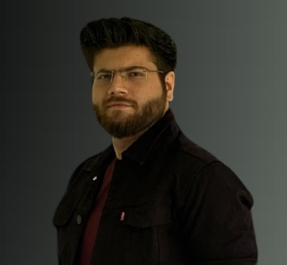

Garvit Chugh
PMRF Scholar, Dual PhD-MTech Scholar
Result-oriented, top performer, and self-starter professional with expertise in mobile computing, IoT, and operating systems. I am a Ph.D. scholar (PMRF) in Mobile and Pervasive Computing at the UbiSys Research Group in IIT Jodhpur under the joint supervision of Dr. Suchetana Chakraborty, IIT Jodhpur and Dr. Sandip Chakraborty, IIT Kharagpur. My focus converges on developing ubiquitous computing solutions for health sensing, particularly behavioural sensing. My research work has featured in publications such as IEEE PerCom, ACM CHASE, COMSNETS, ICDM, and Ubicomp/ISWC. I had the opportunity to advance my research as a visiting scholar under Prof. Nirmalya Roy at the MPSC Lab, University of Maryland Baltimore County, USA.
Research Vision: AI-driven software engineering, sustainability, functional systems for all.
Research Interests
Member of ACM & IEEE
Research
Earable-Based Health Sensing
Developing health monitoring solutions using ear-worn IMU sensors — eating behaviour assessment (BiteSense), hydration monitoring (HydratEar), spine movement tracking (SpineSense), and covert messaging (MorsEar).
Behavioural & Focus Analysis
Inertial sensing to monitor involvement and attention during online interactions (enVolve). Detecting temporal lack of focus to identify onset of neurological disorders using earables.
Gesture & Accessibility
Eye gesture recognition with earable inertial sensing for accessible HCI. Wrist strain detection in routine activities via inertial tokenization and LLM-based feedback (WristSense).
AIoT & Smart Systems
Building intelligent IoT community testbeds for ambient living. Multimodal cybersickness detection in consumer VR (VectionSense). Ultrasonic defense for smart earbuds (EarFence).
Latest News
- 37
Recipient of CHI 2026 Honourable Mention Award for MorsEar!
- 36
Gary Marsden Travel Award for CHI 2026!
- 35
IEEE CS TCCC and TCPP STG Travel Grant for PerCom 2026!
- 34
Invited TPC Member of HeadSys 2026 at MobiSys 2026!
- 33
ACM IARCS Grant for PerCom 2026!
- 32
LRNF Travel Grant for SenSys 2026!
- 31
Full paper at CHI 2026 Main Track!
- 30
2 papers at PerCom 2026 WiP Track!
- 29
Full paper at PerCom 2026 Main Track!
- 28
COMSNETS 2026 Travel Grant!
- 27
Poster on BiteSense at ARCS 2026!
- 26
Full paper at COMSNETS 2026!
- 25
Full paper at SenSys 2026!
- 24
Full paper at EICS 2026!
- 23
Selected to receive OmniBuds earable platform!
- 22
ACM/IARCS Travel Grant for PerCom 2025!
- 21
IEEE CS TCCC and TCPP STG Travel Grant for PerCom 2025!
- 20
LRN Foundation Travel Grant for PerCom 2025!
- 19
Full paper at PerCom 2025 + 1 WiP + 1 Artefact!
- 18
TPC Member of COMSNETS Poster Session.
- 17
3 papers at IEEE ICDM, ACM CODS-COMAD, COMSNETS 2024.
- 16
Rank 4, Green Fintech Hackathon, IITJ with RBIH (2024).
- 15
Social Media Chair for COMSNETS 2025!
- 14
Received the Prime Minister Research Fellowship.
Education & Experience
Education
Dual Ph.D. – M.Tech. (CSE)
Indian Institute of Technology, Jodhpur
Mobile and Pervasive Computing. Advisors: Dr. Suchetana Chakraborty & Dr. Sandip Chakraborty.
Thesis Submitted. CGPA: 8.93/10
B.Tech. (CSE)
Guru Gobind Singh Indraprastha University, Delhi
Experience
Visiting Researcher
University of Maryland, Baltimore County, USA
MPSC Lab under Prof. Nirmalya Roy.
Teaching Assistant
Indian Institute of Technology, Jodhpur
Web Developer (Research)
Futural Solutions, New Delhi
Publications
2026
-
MorsEar: Toward Generalizable Low-Resource Covert Messaging via Earable-Based Inertial Sensing
CHI 2026 Main Track Core A* Honourable Mention Award
-
VectionSense: Multimodal Inertial-Physiological Cybersickness Detection in Consumer VR
SAXR 2026 Workshop co-located with CHI 2026 Workshop Core A*
-
HydratEar: Non-Invasive Hydration Monitoring using In-Ear Acoustic Reflectometry
PerCom 2026 Main Track Core A*
-
EarFence: Lightweight Ultrasonic Defense for Smart Earbuds Against Hidden Commands
PerCom 2026 WiP Track Core A*
-
CompulsEar: Body-focused Repetitive Behaviors Detection using Earable-Based Inertial Sensing
PerCom 2026 WiP Track Core A*
Awards & Service
Awards & Recognition
- Departmental Rank 1 – M.Tech-PhD, IIT Jodhpur
- CHI 2026 Honourable Mention Award (MorsEar)
- Prime Minister Research Fellowship (2023)
- Finalist | Stanford EPIC Data Challenge, USA, Top 5 out of 61
- Finalist | IEEE Smart Mobility Challenge, Saudi Arabia, Top 5 out of 175
- TCS Research Scholar Fellowship (2023)
Community Service
- Social Media Chair for ACM/IEEE COMSNETS 2025, 2026, 2027
- TPC Member for HeadSys @ MobiSys 2026
- TPC Member of COMSNETS Poster Session 2025, 2026
- Web Chair at ACM/IEEE COMSNETS 2024
- Reviewer for conferences: CHI, NeurIPS, CSCW, KDD, CHASE, SmartComp
- Reviewer for journals: IEEE TMC, Pervasive Computing, PACMHCI
Contact
Interested in collaboration, research opportunities, or just want to connect? Feel free to reach out.
UbiSys Research Group, Dept of CSE, IIT Jodhpur, Rajasthan 342030, India